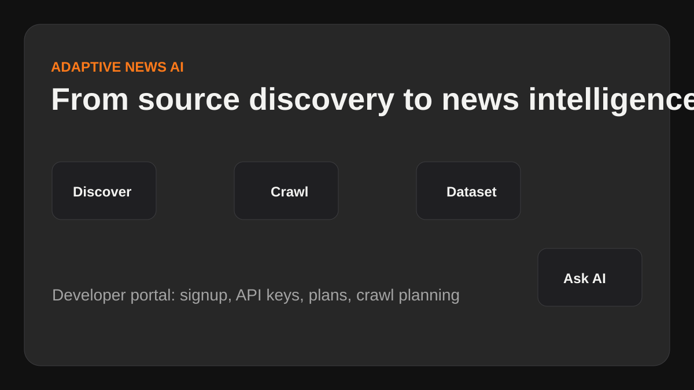

PUBLIC WORKFLOW
Adaptive News AI
کدبیس کرالر خصوصی میماند، اما workflow محصول عمومی است: کشف سایتهای خبری، خزش، دیتاست، پرسش از AI و دسترسی Developer API.

Workflow
Discover
خواندن robots.txt، sitemap و news sitemap.
Crawl
دریافت HTML، ثبت HTTP status و ساخت دیتاست.
Ask
پرسش خبری با AI روی دیتاست جمعآوریشده.
Private Boundary
Source code, credentials, local SQLite databases, panel config, and raw data remain private. Public docs only explain goals, architecture, and integration flow.
Private core + Public workflow + Developer API